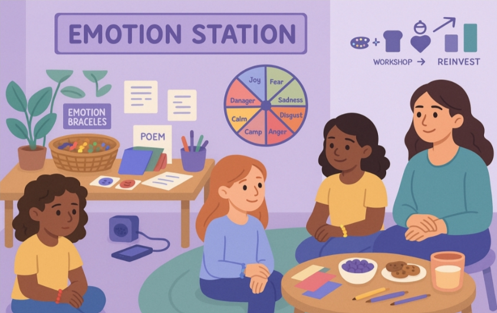

Emotion Station explores the silence and stigma surrounding mental health among Afghan girls and proposes a small, calm space where emotions can be expressed without fear of judgment.
The project explored how stigma, fear of judgment, and limited mental-health education affect Afghan girls' willingness to talk about their emotions.
Emotion Station is a proposed small, calm and safe space inside schools or community environments.
It is designed to encourage girls to reflect, express and explore their emotions without feeling pressured to speak.
Instead of relying only on conversation, the station uses creative and culturally sensitive tools such as emotion wheels, mood cards, writing, drawing and bracelets.

Click each element to discover how it became part of the Emotion Station concept.
A visual way to identify emotions.
Click to explore →Wearable expressions of emotion.
Click to explore →Creative ways to express what's inside.
Click to explore →Sound designed to shape the atmosphere.
Click to explore →Small groups built around connection.
Click to explore →Building mental-health awareness.
Click to explore →Emotion Station developed through research, experimentation and reflection.
The project began by exploring mental-health awareness and stigma among Afghan girls through a survey and interviews.
The first Emotion Station created a welcoming environment using music, snacks, comfortable seating, emotion tools and creative activities.
The first experience showed that some tools needed clearer explanations, reflection time needed improvement, and participant feedback needed to be collected more clearly.
The second session introduced a breathing exercise, visual instructions, a privacy poster and a feedback form.
Four girls participated in the second session, which lasted two hours. The experience gave Saeeda greater confidence in the concept and in her role as a facilitator.
The project changed based on what was learned during the first experience.
The project is designed as something that can continue developing beyond the original sessions.
Emotion Station grew from Saeeda's interest in creating a space where girls could express themselves with greater comfort, privacy and freedom from judgment.